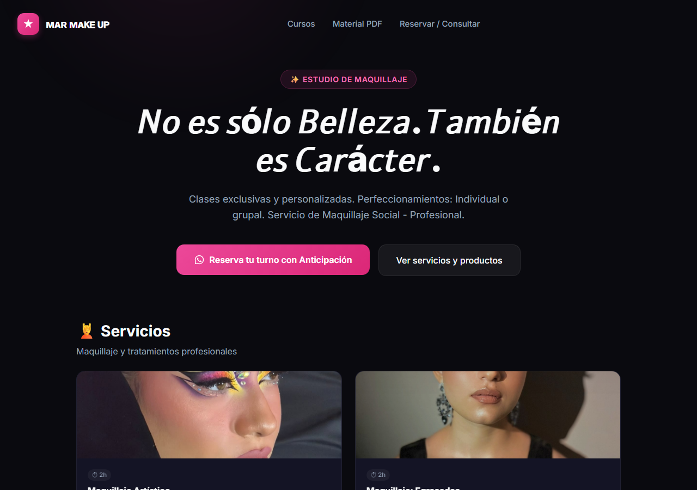

Casos de Prueba — Mar Makeup
Sitio comercial · URL: mar-makeup.vercel.app · Repo: github.com/Fabian-C741/Proyect-CRM
Se ejecutan manualmente los casos: quien ejecuta marca PASA / FALLA en la columna "Estado" y deja comentarios si corresponde. No se exponen credenciales, URL de APIs internas ni datos de terceros.
Módulo 01 · Carga y estructura general
| ID | Módulo | Pasos | Resultado esperado | Resultado | Estado |
|---|
| EST-01 | Carga | 1) Abrir mar-makeup.vercel.app. | La página carga sin errores y muestra el contenido del catálogo. | | |
| EST-02 | Carga | 1) Recargar la página 3 veces seguidas. | El resultado es consistente (misma carga, sin errores intermitentes). | | |

Evidencia — Home / catálogo (captura de muestra del entorno público).
Módulo 02 · Catálogo y precios
| ID | Módulo | Pasos | Resultado esperado | Resultado | Estado |
|---|
| CAT-01 | Catálogo | 1) Revisar el listado de productos del catálogo. | Cada producto muestra imagen, nombre, descripción y precio legibles. | | |
| CAT-02 | Precios | 1) Verificar el formato de precio de al menos 5 productos. | Formato de moneda consistente y sin precios vacíos. | | |
| CAT-03 | Catálogo | 1) Verificar que las imágenes de los productos carguen. | Las imágenes se cargan; no quedan placeholders rotos. | | |
Módulo 03 · Contacto por WhatsApp
| ID | Módulo | Pasos | Resultado esperado | Resultado | Estado |
|---|
| WSP-01 | WhatsApp | 1) Clic en el botón "Contactar" de un producto. | Abre WhatsApp (wa.me) con mensaje pre-cargado referente a ese producto. | | |
| WSP-02 | WhatsApp | 1) Comparar el mensaje pre-cargado de dos productos distintos. | El mensaje identifica correctamente el producto/boton elegido. | | |
| WSP-03 | WhatsApp | 1) Abrir el enlace de WhatsApp en mobile (sin WhatsApp instalado). | Cae en WhatsApp Web o instalación, sin error de URL. | | |
Módulo 04 · Navegación y enlaces
| ID | Módulo | Pasos | Resultado esperado | Resultado | Estado |
|---|
| NAV-01 | Navbar | 1) Navegar entre secciones del menú principal. | Cada sección se muestra con su contenido; anclas funcionan. | | |
| NAV-02 | Menú mobile | 1) Abrir el menú en vista mobile. | El menú colapsado se despliega y cada opción es táctil. | | |
| NAV-03 | URLs internas | 1) Verificar que no existan enlaces con # como placeholder. | No hay marcadores de posición rotos ("#"). | | |
Módulo 05 · Galería y multimedia
| ID | Módulo | Pasos | Resultado esperado | Resultado | Estado |
|---|
| GAL-01 | Galería | 1) Revisar la galería de trabajos/maquillaje. | Las imágenes se muestran en grid y se ven nítidas. | | |
| GAL-02 | Galería | 1) Clic sobre una imagen de la galería. | Abre la vista ampliada/detalle esperado, si aplica. | | |
Módulo 06 · Responsive
| ID | Módulo | Pasos | Resultado esperado | Resultado | Estado |
|---|
| RSP-01 | Responsive | 1) Probar en mobile (360–430px). 2) Revisar catálogo y botones. | Sin desbordes horizontales; botones de WhatsApp accesibles. | | |
| RSP-02 | Responsive | 1) Probar en tablet (~768px) y escritorio (1280px+). 2) Revisar grid del catálogo. | Los productos se acomodan correctamente en cada ancho. | | |
Módulo 07 · Accesos restringidos
| ID | Módulo | Pasos | Resultado esperado | Resultado | Estado |
|---|
| SEC-01 | Admin/API | 1) Intentar acceder a rutas internas del proyecto. | No se exponen datos internos. ACCESO RESTRINGIDO | | |
| SEC-02 | Secretos | 1) Revisar que no existan credenciales visibles en el sitio. | No se muestran claves, tokens ni URLs internas de servicios. | | |